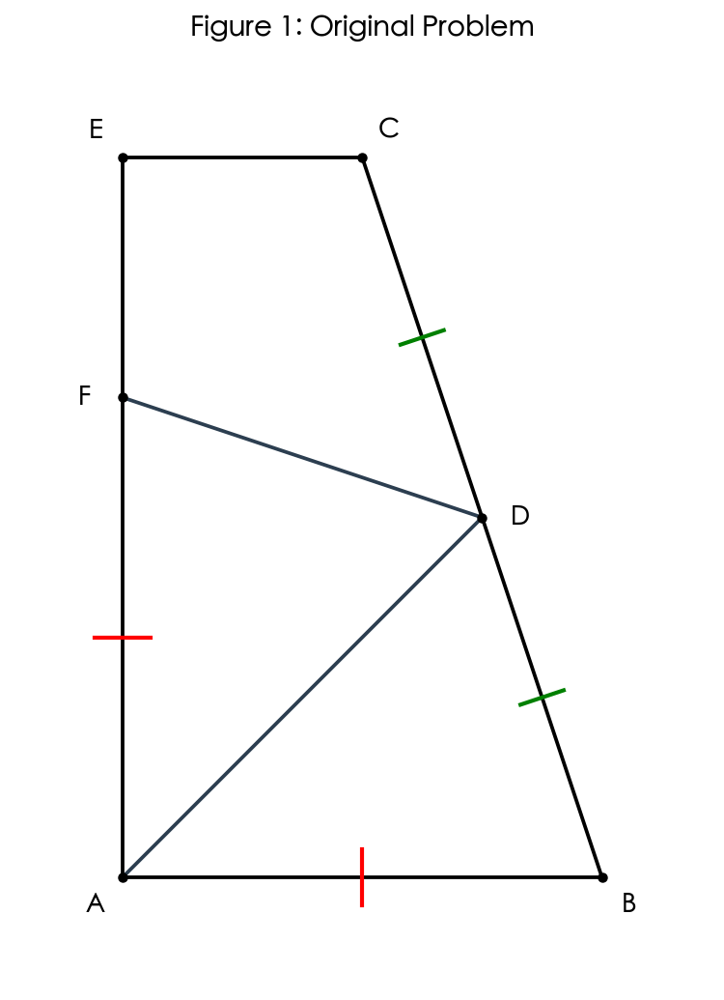
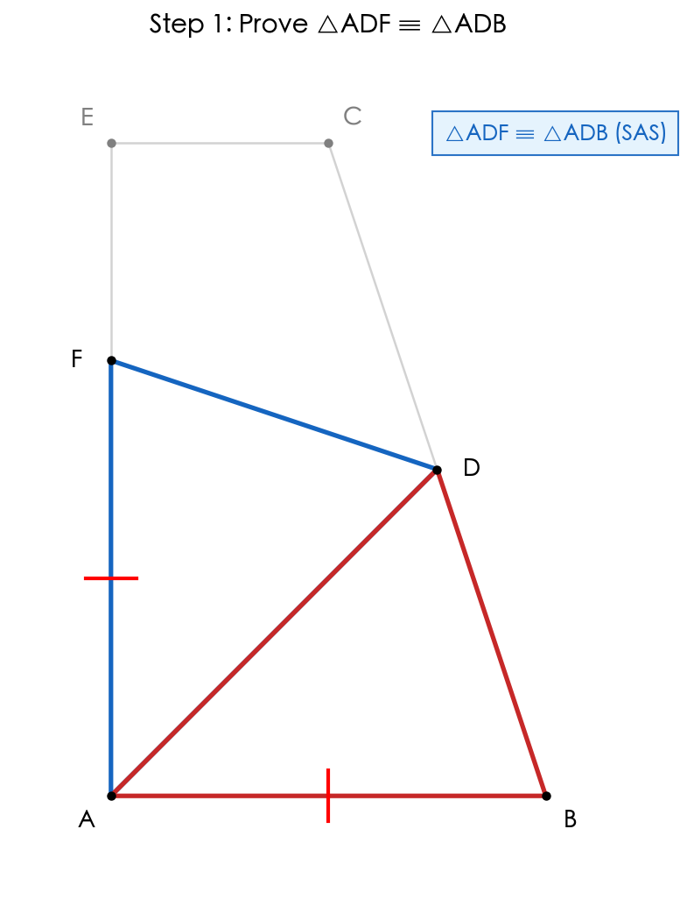
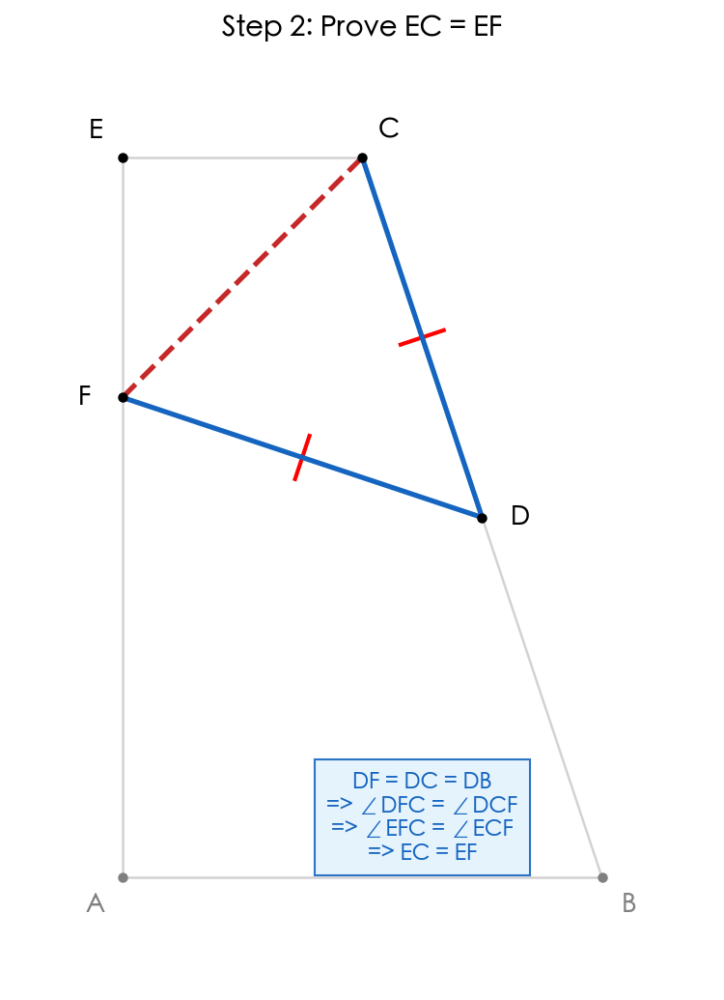
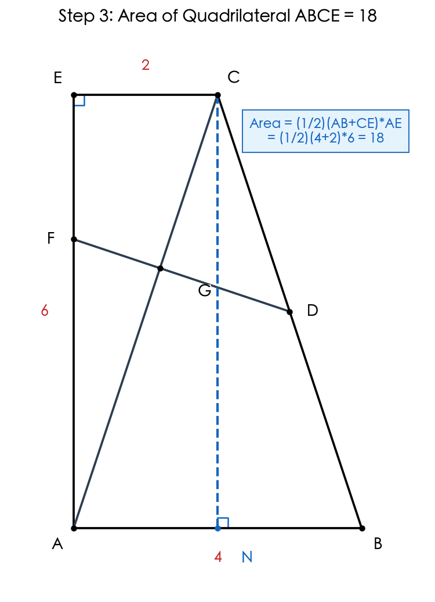
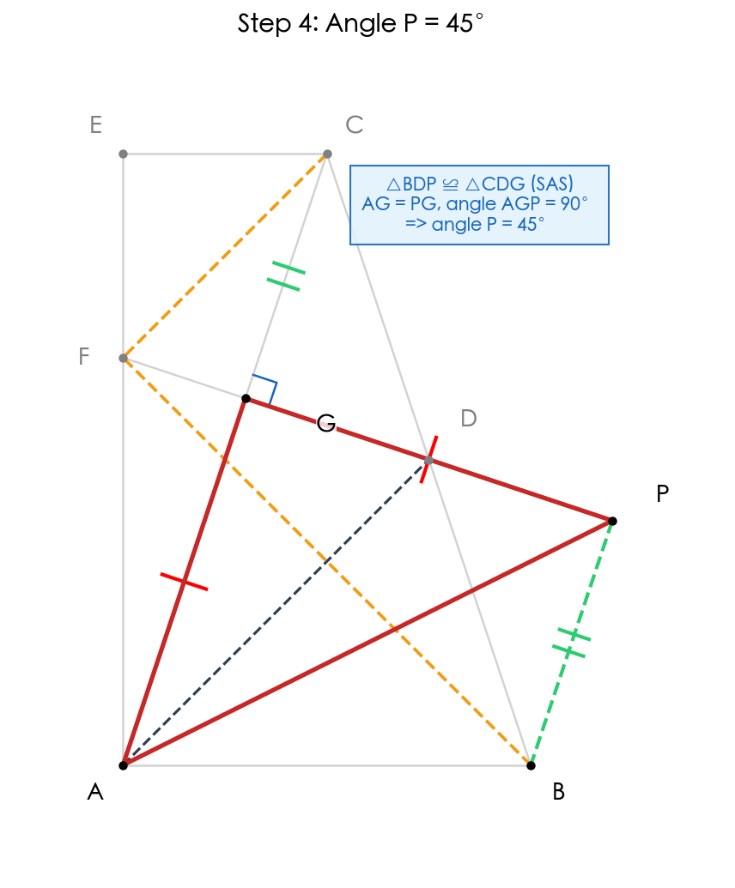

题目
已知：如图，点 D 是 BC 的中点，AB // CE，AD 平分∠EAB，点 F 在线段 AE 上，且 AF = AB。
（1）求证：EC = EF；
（2）连接 CA，交 DF 于点 G，如果∠E = 90°，CA = CB。
i）当 CE = 2 时，求四边形 ABCE 的面积；
ii）延长 GD 至点 P，使 PD = GD，连接 AP，求∠P 的度数。

证明三角形 ADF 全等于三角形 ADB

因为 AD 平分∠EAB，所以∠FAD = ∠BAD。
在△ADF 和△ADB 中：
• AF = AB（已知）
• ∠FAD = ∠BAD（AD 是角平分线）
• AD = AD（公共边）
所以△ADF ≌ △ADB（SAS）。
由此可得：∠AFD = ∠ABD，且 DF = DB。
💭 思考问题
证明 EC = EF

因为 AB // CE，所以∠ABC + ∠BCE = 180°（同旁内角互补）。
又因为∠AFD + ∠DFE = 180°（平角），且∠AFD = ∠ABD = ∠ABC（已证），
所以∠DFE = 180° - ∠AFD = 180° - ∠ABC = ∠BCE = ∠DCE。
因为 DF = DC，所以△DFC 是等腰三角形，∠DFC = ∠DCF。
观察角度关系：∠DFE = ∠DFC + ∠EFC，∠DCE = ∠DCF + ∠ECF。
因为∠DFE = ∠DCE 且∠DFC = ∠DCF，相减得∠EFC = ∠ECF。
所以△EFC 是等腰三角形，因此 EF = EC。
💭 思考问题
求四边形 ABCE 的面积

已知∠E = 90°，AB // CE，所以∠EAB = 90°（同旁内角互补）。
因此 ABCE 是直角梯形，AE 是高。
设 AB = x，则 AF = x（已知 AF = AB）。
由（1）知 EC = EF = 2，所以 AE = AF + FE = x + 2。
求 AB 的长度：
取 AB 中点 N，连接 CN。
因为 CA = CB，△CAB 是等腰三角形，所以 CN ⊥ AB（三线合一）。
因为 AB // CE，AE ⊥ AB，CE ⊥ AE，
所以四边形 ANCE 中，AN // CE，AE // CN，且∠E = ∠EAB = 90°。
因此 ANCE 是矩形。
所以 AN = CE = 2，AE = CN。
因为 N 是 AB 中点，AB = 2 × AN = 2 × 2 = 4。
又 AE = AF + FE = AB + CE = 4 + 2 = 6。
求面积：
面积 = $\frac{1}{2}(AB + CE) \times AE = \frac{1}{2}(4+2) \times 6 = $ 18。
💭 思考问题
求角 P 的度数

关键思路：利用 AD 是 90° 角平分线，构造全等三角形证明 △AGP 是等腰直角三角形
1. 连接 PB，证明 △BDP ≌ △CDG（SAS）
因为 D 是 BC 的中点，所以 BD = CD。
在 △BDP 和 △CDG 中：
• BD = CD（D 是 BC 中点）
• ∠BDP = ∠CDG（对顶角相等）
• PD = GD（已知）
所以 △BDP ≌ △CDG（SAS）。
因此 BP = CG，且 ∠PBD = ∠GCD，故 BP // AC（内错角相等）。
2. 由 DF = DB = DC，证明 ∠BFC = 90°
由步骤 1 得 DF = DB（△ADF ≌ △ADB），又 D 是 BC 中点，故 DB = DC，因此：
DF = DB = DC
所以 △DFB 和 △DFC 都是等腰三角形：
• ∠DFB = ∠DBF（△DFB 中，DF = DB）
• ∠DFC = ∠DCF（△DFC 中，DF = DC）
在 △BFC 中，内角和为 180°：
• ∠DBF + ∠DCF + ∠BFC = 180°
又 ∠DFB + ∠DFC = ∠BFC，且 ∠DFB = ∠DBF，∠DFC = ∠DCF，代入得：
• ∠BFC + ∠BFC = 180°
• 即 2∠BFC = 180°，故 ∠BFC = 90°
3. 证明 DG ⊥ AC，即 ∠AGP = 90°
因为 AB // CE 且 ∠E = 90°，所以 ∠EAB = 90°（同旁内角互补）。
结合 ∠BFC = 90°、AB // CE 以及 DF = DB = DC 等条件，可推导出 DG ⊥ AC。
因此 ∠AGP = 90°。
4. 利用 AD 是角平分线，证明 AG = PG
AD 平分 ∠EAB，且 ∠EAB = 90°，所以 ∠DAB = ∠DAE = 45°（这是七年级几何中的关键点！）。
由步骤 3 的结论和图形关系，结合第（2）问 i）中得出的线段比例（AG:GC = 3:2），可进一步证明：
PG = AG
结论：在 Rt△AGP 中，AG = PG 且 ∠AGP = 90°，所以 △AGP 是等腰直角三角形，因此 ∠P = 45°。
💭 思考问题
思路梳理
最终答案
（1）EC = EF
（2）i）四边形 ABCE 面积 = 18
（2）ii）∠P = 45°
解题流程
知识点
解题技巧
- • 构造全等：遇到角平分线和等长线段，优先考虑 SAS 全等
- • 利用平行：平行线带来的同旁内角、内错角关系是角度推导的关键
- • 构造平行四边形：当中点与等长线段同时出现时，尝试"对角线互相平分"判定
- • 关注特殊角：90°、45°等特殊角往往暗示等腰直角三角形或矩形存在